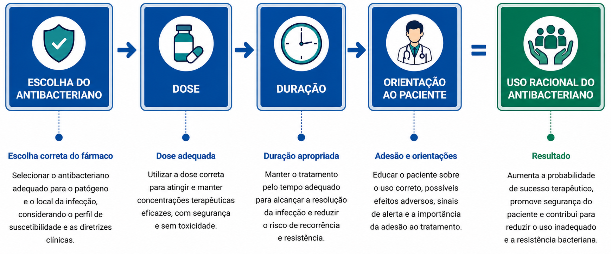

Comunicação em antibioticoterapia
A prescrição de um antibacteriano não se encerra na escolha da molécula, da dose ou da duração do tratamento. A orientação fornecida ao paciente integra o próprio ato terapêutico. A compreensão da indicação, do tempo de uso e dos possíveis efeitos adversos influencia diretamente a adesão ao tratamento, a segurança do paciente e o impacto coletivo da decisão terapêutica 1–3.
Falhas na comunicação estão associadas à interrupção precoce do tratamento, ao reaproveitamento de sobras de antibacterianos e à automedicação em episódios futuros. Esses comportamentos podem ser favorecidos por orientações insuficientes, incompletas ou pouco claras durante o atendimento 1–3.

A comunicação adequada consiste em traduzir o conhecimento técnico de forma compreensível, sem simplificações excessivas ou distorções conceituais. O paciente não precisa compreender mecanismos de ação ou princípios farmacodinâmicos, mas deve entender por que o medicamento foi indicado ou por que não foi.
Durante a prescrição, três pontos principais devem ser explicados de forma objetiva:
- Qual é o diagnóstico ou a hipótese clínica?
- Por que o antibacteriano é necessário naquele caso, ou por que não é?
- Qual é o tempo previsto de uso e o que se espera como evolução clínica?
Uma comunicação clara também reduz a expectativa por prescrições desnecessárias e fortalece a confiança do paciente quando a observação clínica e o acompanhamento são a opção mais adequada. Explicar que não prescrever antibacteriano pode representar a decisão mais segura, faz parte da prática baseada em evidências 1–3.
Um paciente com quadro compatível com infecção viral solicita um antibacteriano porque acredita que o medicamento acelerará sua recuperação.
Qual é a conduta mais apropriada?
A antibioticoterapia racional não depende apenas de conhecimento técnico, mas também da capacidade de comunicá-lo de forma responsável. A decisão médica é técnica, mas o uso correto do medicamento envolve responsabilidade compartilhada entre profissional e paciente 1–3.